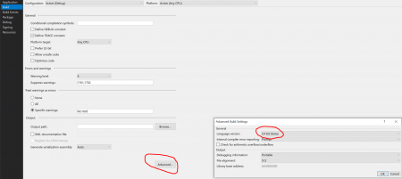
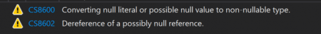

C# 8.0 features
Met de komst van .NET Core 3.0 in september zet Microsoft een nieuwe stap voor het .NET platform. In mijn blog over de nieuwe features in .NET Core 3.0 komen de meest belangrijke aan bod. Onderdeel van .NET Core 3.0 zijn Worker Services. In deze blog vertel ik hier meer over.
C# 8.0 features
Tegelijk met .NET Core 3.0 komt ook C# 8.0 uit. Deze nieuwe versie biedt een heel aantal nieuwe features. De belangrijkste nieuwe features zijn:
- Nullable reference types (dwingt betrouwbaardere code af)
- Async streams (await foreach)
- Ranges (eenvoudig selecties uit arrays halen)
- Default implementations on interfaces (niet elke class hoeft alle methodes nog te implementeren)
- Recursive patterns (eenvoudiger matchen bij gebruik van de ‘is’ operator)
- Switch expressions (traditionele switch statemens eindelijk in een modern jasje)
In deze blogpost loop ik langs deze features en geef ik bij elke feature een voorbeeld hoe dit gebruikt kan worden.
PLATFORM AFHANKELIJKHEDEN
Allereerst is het belangrijk om te weten dat een aantal van deze features leunen op nieuwe types die zijn toegevoegd aan het framework. Deze types zijn onderdeel van .NET Standard 2.1. Het .NET Core 3.0 implementeert dit maar bijvoorbeeld het .NET Framework 4.8 doet dit niet. Deze features kunnen daardoor ook niet in het .NET framework 4.8 komen.
C# 8.0 GEBRUIKEN BINNEN JE PROJECT
Om C# 8.0 features te kunnen gebruiken zal je dit eerst in je build settings moeten opgeven. Dit doe je in Visual Studio 2019 bij ‘project properties –> Build –> Advanced –> Language Settings: C# 8.0’:

NULLABLE REFERENCE TYPES
Wanneer je gebruik maakt van C# 8.0 dan mogen refernce geen null waarden bevatten. Indien dit wel het geval is zal de compiler een warning geven:
Person person = new Person();
person = null;
Console.WriteLine($"Hello {person.Name}!");
Nu kan het natuurlijk zo zijn dat de null waarde bij een reference type wel degelijk een betekenis heeft binnen je applicatie. In dat geval wil je nog wel een null waarde kunnen toekennen. Dit kan door de ? operator te gebruiken zoals we dat al gewend zijn bij nullable value types:
Person? person = new Person();
person = null;
Console.WriteLine($"Hello {person.Name}!");Je houdt in dit geval nog één warning over, deze geeft aan dat er op deze manier op runtime een nullreference kan optreden. Deze is eenvoudig op te lossen door op deze null waarde te controleren:
Person? person = new Person();
person = null;
if (person != null)
{
Console.WriteLine($"Hello {person.Name}!");
}Door deze nieuwe feature in C# 8.0 gaat de compiler je nog meer dwingen om bewust na te denken of een reference type uberhaupt wel een null waarde mag bevatten. Doordat de compiler je hier nu op wijst zal je code robuuster worden.
Lees hier nog veel meer over op https://devblogs.microsoft.com/dotnet/try-out-nullable-reference-types
ASYNC STREAMS
C# heeft tot nu toe ondersteuning voor methoden waarover geïtereerd kan worden (IEnumerable) en ondersteuning voor async methoden. Maar voor de combinatie van deze twee was tot nu toe geen ondersteuning. Met C# 8.0 is er een nieuw type toegevoegd aan het framework (en is onderdeel van .NET Standard 2.1):
IAsyncEnumerable
Mede hierdoor kan het await keyword nu gebruikt worden voor een foreach blok. Dit resulteert er in dat elke keer dat er naar het volgende item geïtereerd wordt dit asynchroon gebeurt. In code ziet dit er dan bijvoorbeeld als volgt uit:
private static async Task DoAsyncStreams()
{
await foreach (var number in FetchData())
{
Console.WriteLine(number);
}
Console.ReadLine();
}
static async IAsyncEnumerable FetchData()
{
for (int i = 1; i <= 10; i++)
{
await Task.Delay(1000); // Simulate waiting on a server...
yield return i;
}
}De bovenstaande code zorgt ervoor dat er elke seconde een volgende regel wordt afgedrukt. Veel meer uitleg hierover is te vinden op https://docs.microsoft.com/en-us/dotnet/csharp/language-reference/proposals/csharp-8.0/async-streams
RANGES
Met deze feature wordt het eenvoudiger om stukken uit een array te selecteren. Om deze feature mogelijk te maken zijn er twee nieuwe types toegevoegd aan het framework:
- Range
- Index
Om deze types eenvoudig te gebruiken zijn er ook twee nieuwe operators toegevoegd (binnen een array indexer):
- Range operator x..y –> Hiermee kun je een van t/m range definiëren
- Hat operator ^ –> Hiermee kun je het aantal elementen voor het einde van de lijsten specificeren
Deze operators laten zich het beste uitleggen aan de hand van een aantal voorbeelden:
- numbers[..2] –> Selecteert alle elementen van het begin tot het 2e element
- numbers[^2..] –> Selecteert alle elementen vanaf twee elementen voor het einde
- numbers[1..^1] –> Selecteert alle elementen vanaf het 1e element t/m het voorlaatste element
Zoals je ziet maakt dit het selecteren van een subset uit een array een stuk eenvoudiger. Veel meer hierover kun je lezen op https://docs.microsoft.com/en-us/dotnet/csharp/language-reference/proposals/csharp-8.0/ranges
DEFAULT IMPLEMENTATIONS ON INTERFACES
We kennen allemaal de situatie wel dat je een bestaande interface wil uitbreiden maar dat dit impact heeft op een groot deel van je code. Dit omdat alle classes die deze interface implementeren dan ook de nieuwe methode moeten implementeren. C# 8.0 heeft hier de oplossing voor met default implementations. Het is nu namelijk mogelijk om bij een methode in een interface een code blok toe te voegen. Het gevolg is dat deze methode niet meer door alle classes geïmplementeerd hoeft te worden. Indien een class de methode niet specificeert zal de default implementatie aangeroepen worden. In feite maakt dit een vorm van multiple inheritance mogelijk.
interface IDefaultInterfacesExample
{
void DoSomething(string input);
void DoSomethingDifferent(string input)
{
Console.WriteLine("Do something diffrent from default interface implementation");
}
}Persoonlijk ben ik geen heel grote fan van deze feature omdat het je code in mijn ogen minder zuiver maakt.
Zie ook https://devblogs.microsoft.com/dotnet/default-implementations-in-interfaces/
RECURSIVE PATTERNS
Het hele pattern matching mechanisme dat we al langer kennen in C# is met C# 8.0 nog verder uitgebreid. Dit zorgt er o.a. voor dat we bij de ‘is’ operator meer kunnen doen in het matchen van properties en in het opvangen van waarden van properties. De volgende code geeft hier een voorbeeld van:
private static void DoPatternMatching()
{
var point = new Point(2, 3);
// C# 7.0
if (point is Point p && p.X == 2)
{
Console.WriteLine($"C# 7.0 ==> Het betreft een point met X waarde 2 en y waarde {p.Y}");
}
// C# 8.0
if (point is Point { X: 2, Y: int yWaarde})
{
Console.WriteLine($"C# 8.0 ==>Het betreft een point met X waarde 2 en Y waarde {yWaarde}");
}
}Waar je in C# 7.0 nog een variabele ‘p’ moest declareren om iets met de properties te kunnen doen kan dit in C# 8.0 met een anoniem object. Indien je specifieke waarden over wil nemen om deze later te gebruiken dan kan dit door inline deze variabele te declareren (in dit geval bijvoorbeeld de variabele ‘yWaarde’).
Een krachtige feature die code nog overzichtelijker maakt.
SWITCH EXPRESSIONS
Wat bij traditionele switch expressions vaak gebeurt is dat er binnen elke case een return statement staat. Dit oogt vaak wat omslachtig en (persoonlijke mening 😊) het voelt ook wat jaren 80 aan. In C# 8.0 zit nu de mogelijkheid om je switch statements die enkel iets returnen anders te schrijven. Je returned eigenlijk het switch statement en binnen elke case geef je aan wat er in dat geval geretourneerd moet worden.
private static string DoSwitchExpressions()
{
var point = new Point(10, 20);
return point switch
{
Point p when p.X == 10 => "X is inderdaad 10 :)",
Point p when p.X == 20 => "X is 20...",
_ => "Onbekend"
};
}Je ziet hier dat de case statements zijn vervangen door een lambda expression (=>) en de default is vervangen door een underscore (_). Het switch statement zelf staat nu tussen de te testen variabele en een code blok met alle cases.
Je kan hier meer over lezen op https://devblogs.microsoft.com/dotnet/do-more-with-patterns-in-c-8-0/
Dit zijn in mijn ogen de belangrijkste nieuwe features van C# 8.0. De gebruikte voorbeeld code kun je vinden op https://github.com/henthoven/CSharp8Features